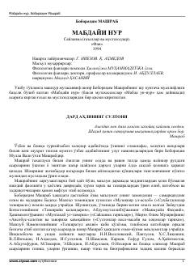

MNBoborahim Mashrabning «Mabdayi nur» nomli tanlangan she'rlari va g'azallari to'plami.
Ushbu kitob o'zbek mumtoz adabiyotining yirik namoyandasi Boborahim Mashrabning «Mabdayi nur» nomli asari asosida tayyorlangan saylanmani o'z ichiga oladi. To'plamga shoirning g'azallari, mustazodlari hamda uning hayoti va ijodiga bag'ishlangan ilmiy-tarixiy ma'lumotlar kiritilgan. Kitobxonlar mashhur mutasavvif shoirning isyonkor руҳdagi va teran falsafiy she'rlari bilan tanishishlari mumkin.